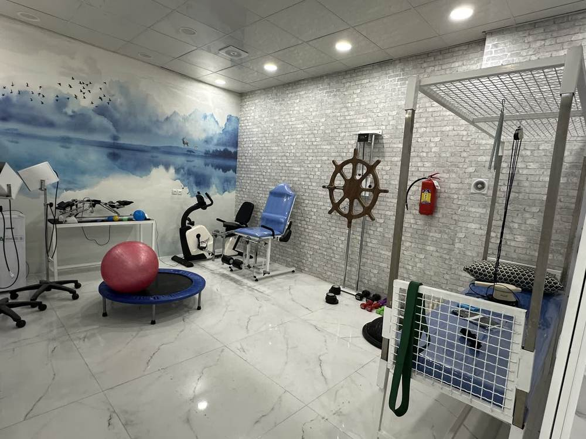
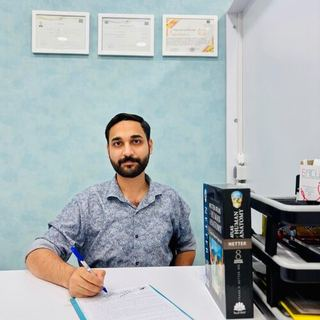

فیزیوتراپی تخصصی دیسک کمر، سیاتیک و دردهای اسکلتیعضلانی در ساوه
علت درد را دقیق بررسی میکنیم و مسیر درمان را برای شما میچینیم. کمردرد، سیاتیک، زانو و شانه را با دستورزی و تمرین هدفمند درمان میکنیم. بازتوانی پس از جراحی و آسیب ورزشی هم بخشی از کار ماست. برنامه هر بیمار جداگانه نوشته میشود تا هم درد کم شود و هم حرکت پایدار برگردد. پیگیری منظم جلسات، نتیجه را ماندگارتر میکند.

رویکرد ما به درمان
در کلینیک ابنسینا ساوه، درمان از ارزیابی کامل حرکتی شروع میشود. ما فقط به کاهش موقت علائم بسنده نمیکنیم. علت درد و محدودیت را پیدا میکنیم. سپس برنامه را بر اساس بدن و سبک زندگی شما مینویسیم. شاکویو و لیزر در جای خود مفیدند. اما جایگزین معاینه دقیق و طراحی اختصاصی نیستند. الگوی درد و عوامل تشدیدکننده را اول مشخص میکنیم. این پایه، مسیر درمان را روشن و قابل پیگیری میسازد.
روش ما ترکیبی از دستورزی، تمرین هدفمند و درای نیدلینگ است. طب سوزنی و آموزش اصلاح حرکت هم در برنامه میآید. تخصص ویژه کلینیک، تمرین شخصیسازیشده است. هر جلسه بر اساس پاسخ بدن شما تنظیم میشود. سه اصل ثابت داریم. اول تشخیص علت پیش از شروع درمان. دوم پیگیری مستمر در جلسات بعد. سوم آموزش تمرین خانگی برای ماندگاری نتیجه.
طیف مشکلات تحت پوشش شامل کمردرد، دیسک، سیاتیک و درد گردن است. زانو، شانه، آسیب ورزشی و بازتوانی پس از جراحی هم درمان میشود. بیماران سکته و سالمندان برنامه جداگانه دارند. دردهای عضلانیمفصلی و اصلاح وضعیت بدن نیز پوشش داده میشود. هدف نهایی، کاهش درد پایدار و قابل اتکاست. بازگشت واقعی به عملکرد روزمره هم بخش جداییناپذیر همین هدف است.

مدارک و تجربه فیزیوتراپیست سجاد علیکرمی – شماره نظام پزشکی: ف-۷۱۹۴۵ سال تجربه بالینی در ساوه؛ درمان دردهای اسکلتیعضلانی، آسیب ورزشی، بازتوانی پس از جراحی و بیماران سکته
خدمات درمانی
خدمات کلینیک برای کاهش درد و بازگرداندن حرکت طراحی شدهاند. هر برنامه بعد از معاینه و متناسب با شرایط شما نوشته میشود. از مشکلات ستون فقرات تا زانو و شانه پوشش داده میشود. بازتوانی پس از جراحی و آسیب ورزشی نیز در همین چارچوب قرار دارد. هدف ما بهبود پایدار عملکرد روزمره است. تسکین کوتاهمدت علائم بهتنهایی کافی نیست و برنامه کاملتری دنبال میشود.
ستون فقرات و دیسک
مفاصل و حرکت
تکنیکهای تخصصی
بازتوانی و گروههای خاص
سوالات متداول
پاسخ پرسشهای رایج پیش از شروع درمان در کلینیک ابنسینا ساوه اینجاست. بسیاری از مراجعان قبل از رزرو نوبت همین سوالها را میپرسند. مطالعه این بخش به تصمیم آگاهانهتر کمک میکند. اگر پرسش دیگری دارید، از طریق تماس یا واتساپ بپرسید. تیم ما آماده راهنمایی شماست. پاسخ را در کوتاهترین زمان ممکن میدهیم. مسیر درمان از همان ابتدا روشن میشود.
چند جلسه فیزیوتراپی لازم است؟
تعداد جلسات به نوع مشکل و شدت علائم بستگی دارد. پاسخ بدن شما هم در طول مسیر مهم است. بعد از جلسه اول، یک برنامه تقریبی اعلام میکنیم. بسیاری از دردهای مکانیکی کمر و گردن در ۸ تا ۱۲ جلسه بهتر میشوند. این عدد برای همه یکسان نیست و در طول درمان قابل تنظیم است. پیشرفت هر فرد جداگانه بررسی میشود تا برنامه همیشه با شرایط فعلی هماهنگ بماند.
آیا فیزیوتراپی دردناک است؟
درمان نباید درد شدید ایجاد کند. در بعضی تکنیکها ممکن است کشش یا ناراحتی خفیف حس کنید. درد شدید یعنی باید شدت را کم کنیم. بازخورد شما در هر جلسه گرفته میشود. بر اساس همان بازخورد، برنامه را تنظیم میکنیم تا ایمن و مؤثر پیش برود. راحتی بیمار در طول مسیر درمان برای ما اولویت دارد و نادیده گرفته نمیشود.
تفاوت فیزیوتراپی با ماساژ چیست؟
ماساژ بیشتر برای آرامش عضلات است. فیزیوتراپی از معاینه شروع میشود و علت مشکل را هدف میگیرد. دستورزی، تمرین اختصاصی و اصلاح الگوی حرکت در کنار هم به کار میروند. هدف فقط کاهش درد نیست. بازگشت عملکرد و کم شدن احتمال عود هم دنبال میشود. به همین دلیل برنامه هر جلسه بر پایه یافتههای بالینی همان روز تنظیم میگردد و پیگیری میشود.
برای دیسک کمر و سیاتیک فیزیوتراپی کافی است؟
در بیشتر موارد بله. بسیاری از بیماران با بیرونزدگی دیسک و درد سیاتیک بدون جراحی بهتر میشوند. تمرین هدفمند و تکنیک دستی نقش اصلی را دارند. اگر ضعف پیشرونده یا اختلال کنترل ادرار باشد، ارجاع پزشکی انجام میشود. تصمیم نهایی بعد از معاینه اولیه مشخص میگردد. پیگیری منظم و انجام تمرین خانگی شانس بهبود غیرجراحی را بهطور محسوس بالاتر میبرد.
آیا بعد از جراحی هم فیزیوتراپی لازم است؟
بله. بازتوانی بعد از جراحی به بازگشت ایمن کمک میکند. از عوارض بعدی هم پیشگیری میکند. برنامه بر اساس نوع جراحی و مرحله بهبودی نوشته میشود. معمولاً از حرکات ساده شروع میکنیم. شدت و پیچیدگی تمرینها بهتدریج افزایش مییابد. هماهنگی با جراح در موارد لازم انجام میشود تا مسیر درمان یکپارچه بماند. خطر آسیب مجدد نیز با همین رویکرد کمتر میشود.
آیا تمرینهای خانگی هم داده میشود؟
حتماً. بخشی از درمان، تمرینهایی است که در خانه انجام میدهید. این کار نتیجه جلسات را تثبیت میکند. احتمال بازگشت درد را هم کم میکند. نحوه صحیح هر حرکت را قدمبهقدم آموزش میدهیم. تعداد و شدت تمرین با پیشرفت شما بهروز میشود تا بدون خطا و بیشبار اجرا شود. رعایت همین برنامه خانگی نقش مهمی در ماندگاری نتیجه درمان دارد.
درای نیدلینگ و طب سوزنی چه کمکی میکند؟
درای نیدلینگ نقاط ماشهای عضله را آزاد میکند. درد و اسپاسم را هم کاهش میدهد. طب سوزنی در مدیریت درد و گردش خون نقش کمکی دارد. این دو روش معمولاً همراه تمرین و دستورزی به کار میروند. نتیجه در این ترکیب پایدارتر میماند. انتخاب روش بر اساس نوع مشکل و تحمل بیمار در همان جلسه بهصورت دقیق انجام میشود و پیگیری میگردد.
تمریندرمانی دقیقاً چه فرقی با ورزش معمولی دارد؟
تمریندرمانی بر اساس معاینه بدن شما نوشته میشود. برخلاف ورزش عمومی، هر حرکت هدف مشخصی دارد. اصلاح الگوی حرکت، تقویت عضله ضعیف و کم کردن فشار روی مفصل از جمله این اهداف است. پیشگیری از عود درد هم در طراحی لحاظ میشود. این رویکرد تخصص ویژه کلینیک ابنسیناست و با برنامه عمومی باشگاه یا خانه تفاوت بنیادی و روشنی دارد.
چطور نوبت بگیرم؟
با شماره ثابت ۰۸۶۴۲۲۳۰۳۰۰ یا موبایل ۰۹۰۱۵۵۵۵۷۲۱ تماس بگیرید. از واتساپ همان شماره موبایل هم میتوانید پیام بگذارید و نوبت رزرو کنید. ساعات کاری کلینیک شنبه تا پنجشنبه، صبح از نه تا سیزده و عصر از شانزده تا بیستویک است. در پیام خود نام و شرح کوتاه مشکل را بنویسید تا هماهنگی سریعتر انجام شود. اگر اورژانس پزشکی دارید به مراکز درمانی اورژانس مراجعه کنید، نه فقط نوبت فیزیوتراپی.
صدای بیماران
بیماران کلینیک ابنسینا ساوه مسیر درمان را از ارزیابی تا تمرین خانگی تجربه کردهاند. در این بخش بخشی از بازخوردهای واقعی درباره دیسک کمر، سیاتیک، شانه، زانو و بازتوانی آمده است. هدف ما شفافیت است تا پیش از نوبت، تصویر روشنتری از روند درمان داشته باشید. هر نظر کوتاه است و نام مراجع برای حفظ حریم شخصی به شکل متعارف آمده است.